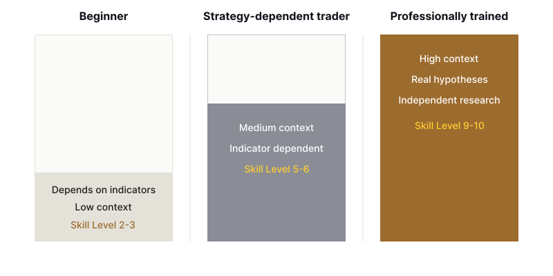

Institutional grade.
Market intelligence
framework.
A structured learning path built on how institutions
analyze, interpret and
act in the markets.
used by top institutions.
flows, participants and intent.
assessments, not opinions.
and capital preservation.
Why this isn't an intraday course, a swing course, or an options course
Most trading education in India is sold by segment: an intraday course, a swing trading course, an options course, a scalping course, sometimes a separate forex or crypto course on top of that. That segmentation makes sense if what's being sold is a set of trade setups tuned to one instrument's typical behavior. It stops making sense once what's being taught is how an auction works, because an auction doesn't change its underlying logic depending on what's being auctioned.
Participants, liquidity, value, inventory, and order flow show up whether you're reading an intraday five-minute chart, a multi-week swing position, an options chain, a currency pair, or a crypto market running twenty-four hours a day. The eleven levels below are built around that logic, not around any single instrument, which is why the same framework carries across all of them.
That doesn't mean every instrument behaves identically. Options, currencies, and crypto each carry mechanics of their own beyond what any single framework can capture in the abstract. What transfers is the underlying discipline, not a promise that one lesson covers every product's fine print.
What you learn: the market intelligence framework
The program is structured as a progression, from the physical mechanics of how a market works to independent professional decision-making. Nobody skips ahead. Each level exists because the one before it doesn't make sense without it.
| Level | What it develops | The question it answers |
|---|---|---|
| 1 | Market microstructure | How does the market physically work? |
| 2 | Order flow intelligence | What's happening inside the auction right now? |
| 3 | Auction market theory | Why is price behaving this way? |
| 4 | Market profile and value | Where is value being accepted? |
| 5 | Institutional inventory | Who is positioned, and how? |
| 6 | Macro flow intelligence | Why might capital be moving the way it is? |
| 7 | Multi-timeframe auction intelligence | Where does today's auction sit inside the bigger one? |
| 8 | Auction narrative analysis | Can I explain the story, not just the chart? |
| 9 | Institutional decision framework | How do all these pieces connect? |
| 10 | Professional execution | How do I express the thesis responsibly? |
| 11 | Independent market research | Can I investigate, challenge, and validate my own ideas? |
Market microstructure
Nothing else on this list makes sense until this foundation is in place, so it gets the most direct attention.
The first block covers why markets exist at all: the difference between price and value, how perceived value shapes behavior, why auctions tend to work better than fixed prices, and how supply-and-demand thinking differs from auction theory. By the end of it, a student understands why markets move, not just that they do.
From there, training turns to participants: retail traders, HNIs, proprietary firms, mutual funds, FIIs, market makers, hedgers, and arbitrageurs. Every trade gets viewed through the lens of a plausible business objective behind it, because a retail trader buying for a house deposit and a proprietary firm hedging a book are doing very different things even when the order looks identical on a chart.
Next comes exchange mechanics: how the matching engine works, tick size, bid, ask, spread, liquidity, and queue and time priority. Students come away understanding how a trade physically happens, not just that clicking a button makes one appear.
The level closes with order types: market orders, limit orders, stop orders, IOC orders, and the difference between passive and aggressive order placement. This is where clicking buy or sell turns into real execution.
Order flow intelligence
This is where the footprints begin. Students learn to read bid versus ask, volume, delta, imbalance, and stacked imbalance, along with footprint reading itself: absorption, exhaustion, trapped traders, and iceberg orders. By the end of it, a student is reading the auction directly instead of watching candles form and guessing at what caused them.
Auction market theory
Here the lens zooms out. The curriculum covers the auction cycle, balance and imbalance, acceptance and rejection, the relationship between time, price, and opportunity, rotation, and the difference between initiative and responsive activity. Students come out of this level understanding why the same auction behaves so differently depending on the conditions around it.
Market profile and value
Price tells you where the market traded. Value asks a deeper question: where did the market consider trade to be fair.
The concepts here include time spent at price (TPO), the distribution of traded volume, the point of greatest concentration (POC), the upper and lower boundaries of accepted value (VAH and VAL), single prints as areas of rapid, thin auction, poor highs and poor lows as signs of an incomplete auction structure, the initial balance that sets an early range, and how value develops and migrates over a session. Students leave this level no longer treating every price level on a chart as equally meaningful, which is a bigger shift than it sounds.
Institutional inventory
This is where the mental model changes shape. Instead of asking whether a candle looks bullish, the question becomes what inventory participants might be carrying, and what could force them to adjust it.
The curriculum covers long and short inventory, inventory correction and transfer, distribution, accumulation, hedging, position adjustment, and dealer behavior. By the end, students stop thinking primarily in candles and start thinking in positions, which is closer to how the people moving real size think about the market.
Macro flow intelligence
Markets don't exist in isolation, and capital moves between instruments and asset classes constantly. This level covers the bond market, the Dollar Index, USDINR, gold, crude, the VIX, FII and DII cash flows, and futures and options positioning as a window into liquidity cycles. Students leave with a working framework for the broader capital-flow context that individual charts sit inside.
Multi-timeframe auction intelligence
The market isn't one auction. It's a hierarchy of them: monthly, weekly, daily, intraday, and the current session, each nested inside the one above it. This level teaches auction alignment across those timeframes, fractal auction behavior, context building, how higher-timeframe value shapes lower-timeframe behavior, and how the two interact. By the end, a student understands where today's auction sits inside the larger picture, instead of treating the five-minute chart as the whole story.
Auction narrative analysis
No indicator dependency, no formula dependency, no signal dependency. Just observation, reasoning, and the ability to tell the story straight.
Students learn to read a single candle, a single footprint, a single auction, a single session, a week, and a month, with the goal never being to predict the next candle but to answer what the market is communicating through its behavior. Mastery at this level means being able to look at a session and explain what happened, where it happened, who may have been affected, what changed, what remains unresolved, and what evidence would confirm or reject the read. That's the capstone that ties the earlier levels together into something closer to fluency than memorization.
Institutional decision framework
By this point everything connects: macro context feeds into value, value feeds into inventory, inventory feeds into the auction, the auction feeds into order flow, and order flow feeds into execution. The order matters here. Order flow doesn't come first. It comes after context, because an isolated footprint tells you what happened, while context is what lets you reason about why it might matter.
Professional execution
Only after a student understands the market do we turn to expressing a decision. This level covers execution itself, scaling into and out of positions, risk, trade management, position management, review, journaling, and performance analysis. The goal isn't maximum activity. It's the highest quality of decision per unit of risk taken, a very different target than most retail trading optimizes for.
Independent market research
This is the deliberate departure from how most trading courses end. Most stop once a student has learned the teacher's strategy. We think real education begins where imitation ends.
At this level, students learn to identify a market question, form a hypothesis, define what observable evidence would matter, separate observation from interpretation, test the hypothesis across different conditions, look for contradictory evidence, reject explanations that don't hold up, document what they find, build a conditional decision framework from it, and revise that framework as the market evolves. That loop, asked honestly and repeatedly, is how independent market thinking develops.
How every lesson gets built
Every major concept in the program is taught through the same nine-part structure, so students always know what kind of thinking is being asked of them at each stage.
| Why does it exist | What problem does this concept solve? |
| Market mechanics | What physically happens inside the market? |
| Institutional perspective | How might a professional participant think about this? |
| Analogy | Can the mechanism be understood through a real-world system first? |
| Observation | What can be observed, with no interpretation added yet? |
| Interpretation | What hypotheses are reasonable here, and what isn't justified by the evidence? |
| Integration | How does this connect to value, profile, delta, inventory, and macro context? |
| Classroom discussion | Can the student reason through a live situation, out loud? |
| Institutional exercise | Can the student narrate a real market session without leaning on an indicator? |
Teaching through analogy, not entertainment
We use everyday systems to explain market mechanics, not to make the material more entertaining but because the mechanism has to be understood first, then mapped onto the market. An auction works like a fish market. Liquidity behaves like water flow. An order book resembles a queue at a counter. A spread is a negotiation between a buyer and a seller who haven't agreed yet. Inventory is a shopkeeper's stock. Absorption works like a sponge taking on water. A trapped trader resembles a truck that has turned onto a road with no exit. Risk gets carried the way you would carry something fragile and made of glass.
What mastery means here
Mastery doesn't mean predicting every move, winning every trade, hitting a 90 percent win rate, or eliminating uncertainty, because none of that is available to anyone, no matter how they were trained. It means being able to observe what the market is doing, explain the auction without inventing a story that goes beyond the evidence, form a reasonable hypothesis, and then deliberately look for whatever would prove that hypothesis wrong instead of only the evidence that confirms it. It means connecting macro context, value, inventory, and order flow into one coherent read, executing that read with controlled risk, reviewing the decision on its own merits regardless of how the trade turned out, and adjusting the framework itself whenever the evidence demands it.
Where different traders stand

| Capability | Beginner | Strategy-dependent trader | Professionally trained student |
|---|---|---|---|
| Understands exchange mechanics | Low | Medium | High |
| Understands participants and their objectives | Low | Low to medium | High |
| Reads auction context | Low | Medium | High |
| Depends on indicators | High | High | Optional |
| Separates fact from interpretation | Low | Medium | High |
| Thinks in inventory, not just candles | Low | Low | High |
| Uses multi-timeframe context | Low | Medium | High |
| Forms real hypotheses | Low | Low | High |
| Challenges their own thesis | Low | Low to medium | High |
| Executes with genuine risk awareness | Variable | Variable | Structured |
| Can explain why a trade exists | Low | Variable | High |
| Can keep learning independently afterward | Low | Low | High |
Beyond the trading curriculum
The Art of Making Wealth isn't only the framework above. Trading psychology doesn't get taught here as a separate lecture, mostly because it doesn't really exist outside of real decisions made under real pressure, so it shows up inside the mentorship itself, in the moment a mentor catches confirmation bias or overconfidence forming.
Around that core, the package also includes software and platform training so students aren't guessing their way through execution tools, a mutual fund course and broader investment education for the part of a portfolio that shouldn't be actively traded, a business analysis course so students can evaluate a company properly before ever buying its stock, and a leadership and self-management component, because trading under pressure is, underneath everything else, a leadership problem as much as a technical one.
How a student's thinking changes
The questions a student asks shift over the course of the program, and the shift itself is the point. It starts with "what should I buy," moves to "what's the setup," then to "what is the market doing," then to "why is it doing that," then to "who might be responsible for this behavior," then to "what evidence supports my interpretation," then to "what would prove me wrong," and eventually arrives at the only question that matters once you're operating under real uncertainty: what's the highest-quality decision available right now, given everything you know and don't know.
How we define success
We don't measure the quality of this education by how impressed a student is on day one. We measure it by what they can reason through independently by day one hundred. The strongest students should need their mentor less over time, not more, and if that stops being true, something in the mentorship needs to change. The goal was never permanent dependence on us. It's intellectual independence from us.
What you leave with
A student doesn't leave this program with a folder of PDFs, a collection of fifty indicators, a list of entry signals, or a memorized strategy. They leave with a market intelligence framework: a way of moving from market mechanics through participants, liquidity, value, and inventory, into the auction itself and its order flow, out to macro and multi-timeframe context, into a narrative that explains what happened, and finally into a decision, an execution, a review, and the ability to keep researching independently afterward.
The test
At some point, imagine your mentor strips every indicator off your screen: no RSI, no MACD, no moving averages, no colored arrows, no flashing "buy now" signal, none of it, and simply asks you to tell them what the market is doing.
Can you? If the honest answer is no, the education isn't finished yet. If the answer is yes, and you can explain what you observed, what you're inferring from it, what you genuinely don't know, what would invalidate your read, and how you would manage the risk regardless, you're starting to think like a market professional.